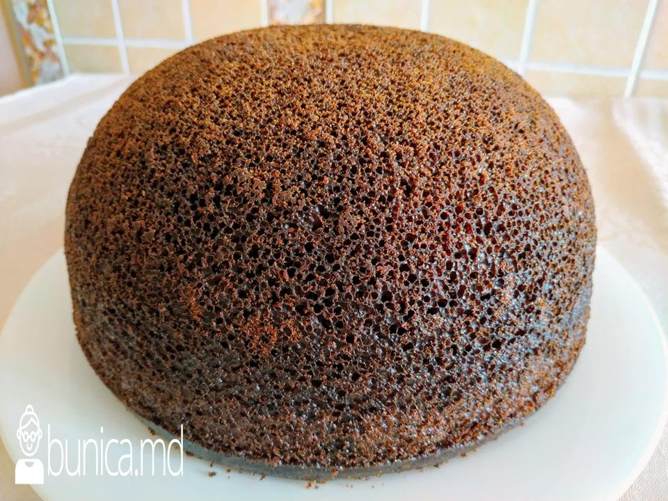
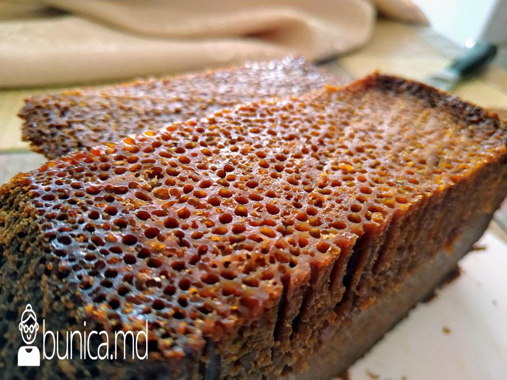

"Baba Neagră" is a traditional Moldovan dish that housewives in northern Moldova have been preparing for years; it is considered the "queen" of the five traditional Moldovan dishes—essential for any festive meal—and is something guests eagerly look forward to savoring.
Ingredients
Place the eggs and sugar in a deep bowl and whisk until the sugar dissolves (2–3 minutes).
Add the flour and vanilla sugar, and whisk the mixture to ensure there are no lumps. Add the oil and stir; then, while continuing to mix, gradually incorporate the milk and *chișleag* (fermented milk). Add the baking soda and mix thoroughly to distribute it evenly, followed by the vodka. That is the order in which I added all the ingredients.
Grease the cauldron with butter or margarine and dust it with breadcrumbs or flour.
We pour the mixture into the cauldron.
As you can see, I’ve wrapped the cauldron in aluminum foil. I do this so the *babuță* doesn’t burn and turns out looking good, not just tasting delicious.
Bake the *babă* for 2 hours at 180–200°C (depending on how your oven bakes), then lower the temperature to 120–150°C and bake for another hour. I’d like to add a note: if you notice that the *babă* isn't dark enough in color after 3 hours of baking, let it bake for another hour, as ovens vary. Tested.
We take care not to open the oven while the *baba* is baking. After three hours of baking, we turn off the heat and let the *baba* sit in the oven for another hour, after which we can remove it.